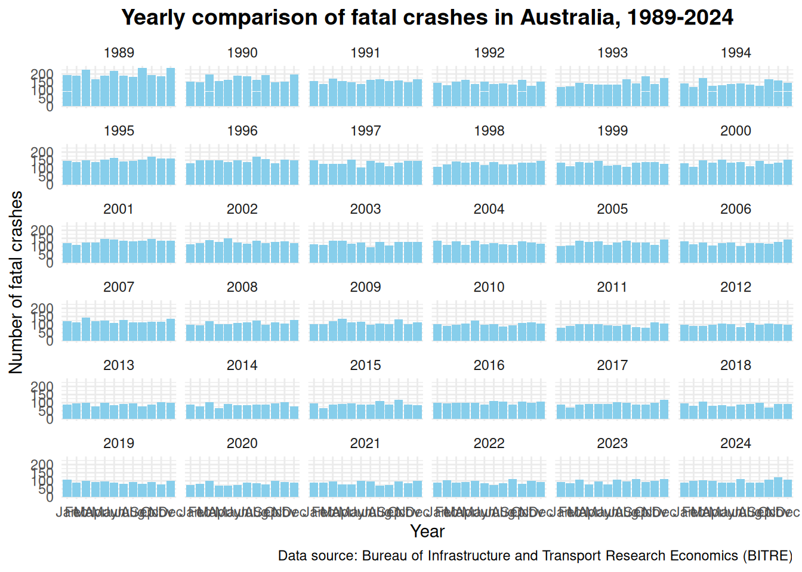
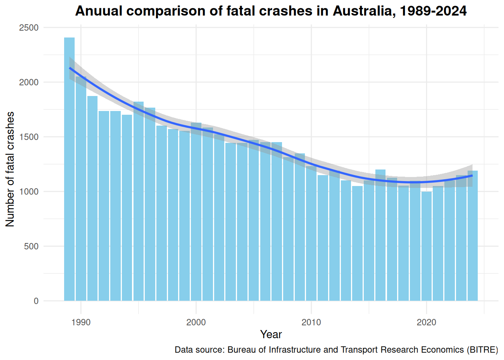
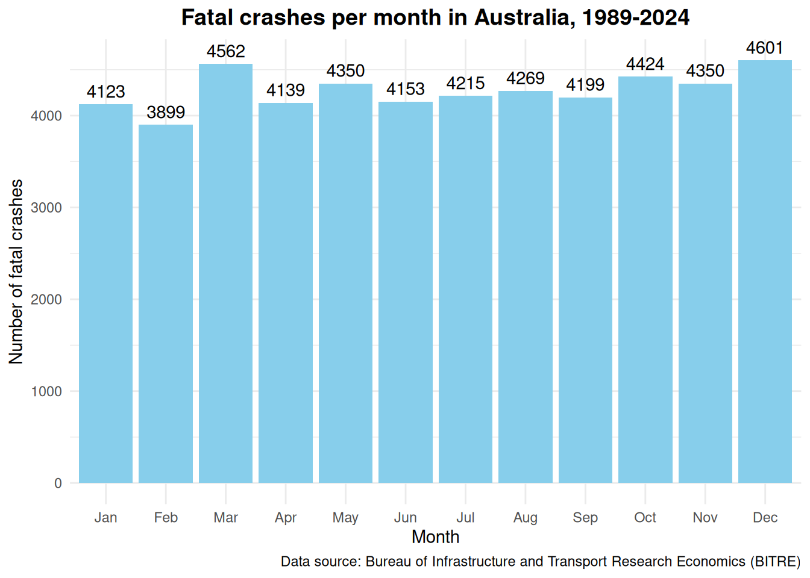
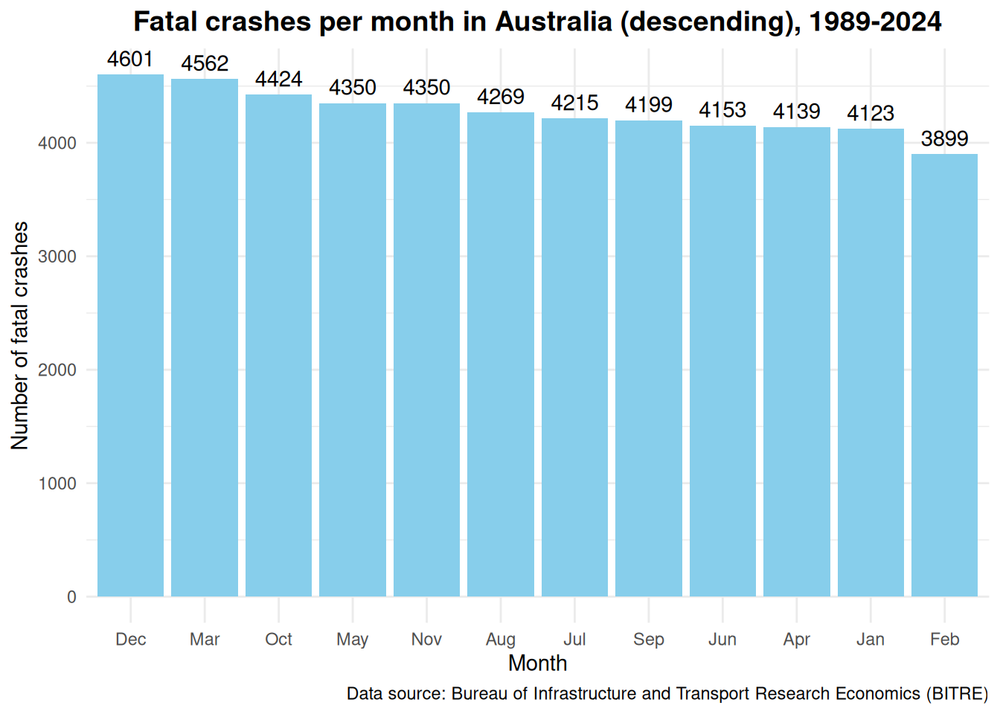
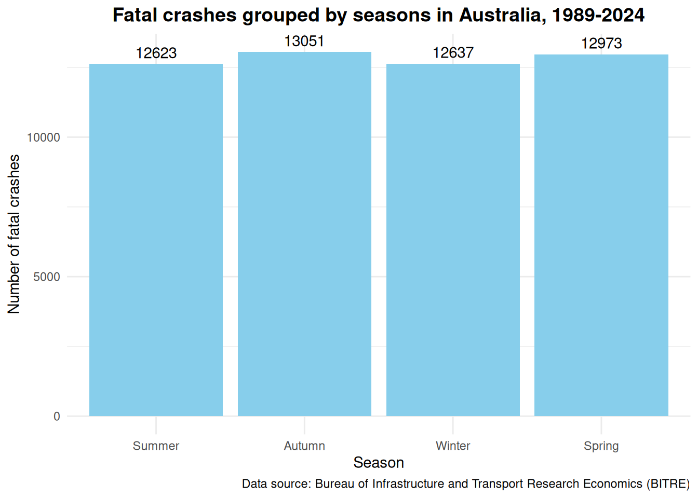
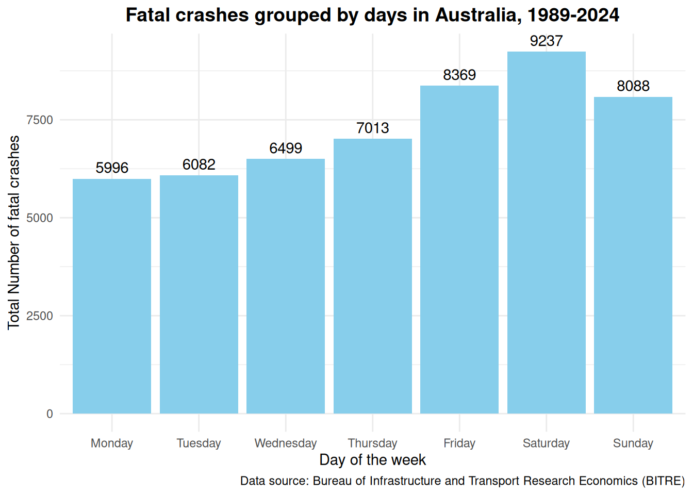

This is an analysis of Australian fatal car crash data from the Australian Road Deaths Dataset (BITRE, 2024). Exploratory data analysis is used to explore the data to identify preliminary trends and patterns. This is also a project for me to learn R and practice data analysis with the aim of building a portfolio of data analytic projects. Thus, my objectives were as follow:
Objective 1: Identify trends and patterns in fatal crash data.
Objective 2: Learn the R Studio environment to practice and perform data and statistical analysis concepts.
A little bit of context here. Western Australia have had a horror year in fatal car crashes in 2024. Possibly an all time high with lots of attention from the media. Furthermore, having previously worked as a crash investigator and later road trauma support for victims of road trauma, I realised an increasing number of car related accidents and sadly, fatal accidents. With my background in Economics and work in research- especially in quantitative analytics, I want to bring to light evidence based issues with the hope that someone out there, whether in consulting, a policy maker, or some one with the power to do something, can do something.
This dataset is very basic with one independent variable, which is time. It provided a good starting point for me to practice my analysis processes, and a simple starting point to start formulating questions about the data, prior to undertaking more in depth analysis of other dataframes within the dataset.
Therefore, as mentioned above, my hypothesis underpinned by anecdotal personal observation was:
Hypothesis 1: There is an increase in fatal crashes over time.
Methodology
The dataset
The dataset was taken from the Australian Road Deaths Database- ARDD, publicly published by the Bureau of Bureau of Infrastructure and Transport Research Economics at The Department of Infrastructure, Transport, Regional Development, Communications and the Arts (BITRE, 2024).
The ARDD contains 2 groups of datasets which are split into:
Fatalities (shows details about a person who had died as a result of a fatal car crash, e.g. age, gender and road user group)
Fatal crash (details about the fatal crash, e.g. date, time, location, crash type, vehicle types).
── Conflicts ────────────────────────────────────────── tidyverse_conflicts() ──
✖ dplyr::filter() masks stats::filter()
✖ dplyr::lag() masks stats::lag()
ℹ Use the conflicted package (<http://conflicted.r-lib.org/>) to force all conflicts to become errors
Analysis
I will analyse the data using summary statistics and Exploratory Data Analysis(EDA).
As mentioned above, this was a starting project and I have deliberately kept it simple so that I can concentrate on my objectives.
Summary statistics helps corroborate the findings from EDA.
Preparing the dataset
Importing the dataset
The dataset contains 4 sheets:
Index
BITRE_Fatal_Crash
BITRE_Fatal_Crash_Count_By_Date
Appendix.
I imported the .xlsx file into R and assigned it to the variable- Crash. I then specified to read only the sheet “BITRE_Fatal_Crash_Count_By_Date” and to skip the first 2 rows. The headings start from the third row of the dataframe.
I checked the variables for their structures and summary statistics (seen below) to get an initial idea of the data. Significant things noted were:
The variables “Month” and “Day Of Week” are characters. It would be good to change them into factors to create levels.
The number of total crashes would be my main interest here, however the way it is now did not make much sense. It needed to be aggregated as time is grouped together (Year, Month and Day).
I would usually check for missing values. However there was no need for this with this dataframe.
Check out the code here
str(crash)
tibble [13,149 × 5] (S3: tbl_df/tbl/data.frame)
$ Date : POSIXct[1:13149], format: "1989-01-01" "1989-01-02" ...
$ Number of fatal crashes: num [1:13149] 6 8 2 5 3 7 7 5 8 7 ...
$ Year : num [1:13149] 1989 1989 1989 1989 1989 ...
$ Month : chr [1:13149] "Jan" "Jan" "Jan" "Jan" ...
$ Day Of Week : chr [1:13149] "Sunday" "Monday" "Tuesday" "Wednesday" ...
Check out the code here
summary(crash)
Date Number of fatal crashes Year Month
Min. :1989-01-01 Min. : 0.0 Min. :1989 Length:13149
1st Qu.:1998-01-01 1st Qu.: 2.0 1st Qu.:1998 Class :character
Median :2007-01-01 Median : 4.0 Median :2007 Mode :character
Mean :2007-01-01 Mean : 3.9 Mean :2007
3rd Qu.:2016-01-01 3rd Qu.: 5.0 3rd Qu.:2016
Max. :2024-12-31 Max. :19.0 Max. :2024
Day Of Week
Length:13149
Class :character
Mode :character
Transform
Using the mutate and factor functions, I changed the “Month” and “Day Of Week” observations into levels rather than characters. This allowed me to identify trends in fatal crashes as time is grouped together.
There seemed to be some trend when the number of fatal crashes is grouped into the different times, e.g. year, month, day. It was found that when the data was grouped according to:
Years: There is a decrease in the number of fatal crashes from 1989 to about 2018 or 2019, before trending up again, which supports my anecdotal observations.
Months: December was the month with the highest number of fatal crashes and February was the month with the lowest fatal crashes.
Seasons: Do not seem to have much of an effect when the data is grouped into the seasons (spring, summer, autumn, winter).
Days of the week: There is an observable difference, whereby Saturday has the highest number of fatal crashes and both Monday and Tuesday had the least number of fatal crashes.
The sections below will lay out in more depth about how my one hypothesis turned into several questions.
Can we see anything when looking at the BIG picture?
Looking at the big picture, it appears the number of fatal crashes contradicts my hypothesis that there is an increase in fatal crashes (using what I call eyeball analysis)- it looked like it was trending down.
I needed to look at the total number of crashes per year specifically to confirm this.
Check out the code here
ggplot(crash_mutate, aes(x = Month, y =`Number of fatal crashes`)) +geom_bar(stat ="identity", fill ="skyblue") +facet_wrap(~Year) +labs(title ="Yearly comparison of fatal crashes in Australia, 1989-2024",x ="Year",y ="Number of fatal crashes",caption ="Data source: Bureau of Infrastructure and Transport Research Economics (BITRE)" ) +theme_minimal() +theme(plot.title =element_text(hjust =0.5, size =14, face ="bold"))

Is it true that the number of crashes over time, from 1989-2024, is actually going down and not going up as hypothesised?
Yes and no. The trend line on the graphs below shows the total number of fatal crashes per year trending downwards from 1989 to around about 2018 or 2019, before going back up again. Of course, to confirm this empirically, I will need to statistically identify the minimum point of the trend using regression analysis (either Polynomial or Time Series regression.
Our summary statistics below, after the graph, confirms this. The maximum total number of fatal crashes is 2407 crashes during 1989, and the minimum total number of fatal crashes is 998 crashes during the year of 2020.
So I was right (to a certain extend), there is a slight upward trend (only in the last few years) in the number of fatal car crashes.
This led me to wonder- what other patterns or trends can be observed from this simple set of data. Is there a particular month or day which has more fatal crashes or less fatal crashes? Would the months where there are large movements of people, such as Christmas, have more fatal crashes or times like winter (that is between June to August here in Australia)? Or particular days such as weekdays when there are more people rushing about their daily lives compared to the weekend.
Check out the code here
crash_year <- crash_mutate %>%group_by(Year) %>%summarise(Total =sum(`Number of fatal crashes`))ggplot(crash_year, aes(x = Year, y = Total)) +geom_bar(stat ="identity", fill ="skyblue") +geom_smooth() +labs(title ="Anuual comparison of fatal crashes in Australia, 1989-2024",x ="Year",y ="Number of fatal crashes",caption ="Data source: Bureau of Infrastructure and Transport Research Economics (BITRE)" ) +theme_minimal() +theme(plot.title =element_text(hjust =0.5, size =14, face ="bold"))
`geom_smooth()` using method = 'loess' and formula = 'y ~ x'

Check out the code here
summary(crash_year)
Year Total
Min. :1989 Min. : 998
1st Qu.:1998 1st Qu.:1144
Median :2006 Median :1444
Mean :2006 Mean :1425
3rd Qu.:2015 3rd Qu.:1608
Max. :2024 Max. :2407
What monthly patterns or trends does the data tell us?
It seemed that I was right. Looking at the first graph below, December is the month with 4601 fatal crashes since 1989, as compared to February which had the least number of fatal crashes with a total of 3899 fatal crashes. This coincides with what is generally known that December is the start of school holidays and annual leave in preparation for the summer break and Christmas and New Year festivities. This is the time of mass movements outwards from the cities towards the regional areas. February on the other hand, is the end of this period. Children all head back to school and the holy trinity of public holidays in Australia- Christmas, New Years and Australia Day, has ended and everyone have to head back to the office to save up money to start it all again.
The first graph looked a bit messy and thus the data is re-arranged to descending order in the second graph. I am unable to see any other patterns or trends here. If you do, please let me know.
As mentioned above, what about seasons? Would winter have more fatal crashes?
Check out the code here
crash_month <- crash_mutate %>%group_by(Month) %>%summarise(Total =sum(`Number of fatal crashes`)) %>%arrange(Month)ggplot(crash_month, aes(x = Month, y = Total)) +geom_bar(stat ="identity", fill ="skyblue") +geom_text(aes(label = Total), vjust =-0.5) +labs(title ="Fatal crashes per month in Australia, 1989-2024",x ="Month",y ="Number of fatal crashes",caption ="Data source: Bureau of Infrastructure and Transport Research Economics (BITRE)" ) +theme_minimal() +theme(plot.title =element_text(hjust =0.5, size =14, face ="bold"))

Check out the code here
ggplot(crash_month, aes(x =reorder(Month, -Total), y = Total)) +geom_bar(stat ="identity", fill ="skyblue") +geom_text(aes(label = Total), vjust =-0.5) +labs(title ="Fatal crashes per month in Australia (descending), 1989-2024",x ="Month",y ="Number of fatal crashes",caption ="Data source: Bureau of Infrastructure and Transport Research Economics (BITRE)" ) +theme_minimal() +theme(plot.title =element_text(hjust =0.5, size =14, face ="bold"))

Check out the code here
summary(crash_month)
Month Total
Jan :1 Min. :3899
Feb :1 1st Qu.:4150
Mar :1 Median :4242
Apr :1 Mean :4274
May :1 3rd Qu.:4368
Jun :1 Max. :4601
(Other):6
# A tibble: 1 × 4
month_max crash_max month_min crash_min
<fct> <dbl> <fct> <dbl>
1 Dec 4601 Feb 3899
Would there be a seasonal effect on the number of fatal crashes?
Contrary what I thought, there did not seem to have any trends or patterns in the number of fatal crashes when the data is grouped into seasons. While I thought that perhaps there would be more fatal crashes in winter (wet roads > more crashes > more deaths), the number of fatal crashes was the second lowest with 12637 fatal crashes among the four seasons.
Check out the code here
crash_seasons <- crash_month %>%mutate(Season =case_when( Month %in%c('Dec', 'Jan', 'Feb') ~'Summer', Month %in%c('Mar', 'Apr', 'May') ~'Autumn', Month %in%c('Jun', 'Jul', 'Aug') ~'Winter', Month %in%c('Sep', 'Oct', 'Nov') ~'Spring'),Season =factor(Season, levels =c("Summer", "Autumn", "Winter", "Spring"))) %>%group_by(Season) %>%summarise(Total =sum(Total)) %>%arrange(Season)ggplot(crash_seasons, aes(x = Season, y = Total)) +geom_bar(stat ="identity", fill ="skyblue") +geom_text(aes(label = Total), vjust =-0.5) +labs(title ="Fatal crashes grouped by seasons in Australia, 1989-2024",x ="Season",y ="Number of fatal crashes",caption ="Data source: Bureau of Infrastructure and Transport Research Economics (BITRE)" ) +theme_minimal() +theme(plot.title =element_text(hjust =0.5, size =14, face ="bold"))

Which day of the week has the most fatal car crashes and which day had the least?
Saturday had the most number of fatal crashes and Monday (followed closely by Tuesday) had the least number of fatal crashes. The graph below shows that there was quite a large difference between Saturday and Monday. I would not go to the extend of saying the result is significant yet as it has not been tested for statistical significance. On face value though, it seems quite significant compared to the result when the data is grouped by seasons.
Check out the code here
crash_day <- crash %>%group_by(`Day Of Week`) %>%summarise(Total =sum(`Number of fatal crashes`)) %>%mutate(`Day Of Week`=factor(`Day Of Week`, levels =c("Monday", "Tuesday", "Wednesday", "Thursday", "Friday", "Saturday", "Sunday")))ggplot(crash_day, aes(x =`Day Of Week`, y = Total)) +geom_bar(stat ="identity", fill ="skyblue") +labs(title ="Fatal crashes grouped by days in Australia, 1989-2024",x ="Day of the week",y ="Total Number of fatal crashes",caption ="Data source: Bureau of Infrastructure and Transport Research Economics (BITRE)" ) +geom_text(aes(label = Total), vjust =-0.5) +theme_minimal() +theme(plot.title =element_text(hjust =0.5, size =14, face ="bold"))

Check out the code here
summary(crash_day)
Day Of Week Total
Monday :1 Min. :5996
Tuesday :1 1st Qu.:6290
Wednesday:1 Median :7013
Thursday :1 Mean :7326
Friday :1 3rd Qu.:8228
Saturday :1 Max. :9237
Sunday :1
Check out the code here
crash_day %>%summarise(day_max =`Day Of Week`[which.max(Total)],crash_max =max(Total),day_min =`Day Of Week`[which.min(Total)],crash_min =min(Total) )
The purpose of this exploratory analysis is to understand the data and to generate questions and hypotheses. The findings here are exploratory in nature and have not yet been subjected to proper statistical analysis. Therefore, conclusive recommendations cannot be made yet.
Conclusion
There appears to be some trends relating to fatal car crashes in Australian between 1989 to 2024 when the data is grouped by time. This EDA was conducted due to my observations that there seems to be more fatal car crashes over the last few years. This anecdotal observation underpinned my hypothesis that there is an increasing trend in fatal crashes in Australia. Using EDA and summary statistics, the hypothesis was right, in the sense that there was a decline in fatal car crashes over the years from 1989 to around 2018/ 2019 before trending up again over the last few years.
This led me to further wonder what other trends was captured by the data if the time was grouped into months, seasons and days of the week. Again there was an observable trend in the number of fatal car crashes in months (highest in December and lowest in February) and days (highest on Saturdays and lowest on Mondays & Tuesdays). The seasons did appear to have much of an effect on the number of fatal car crashes.
This was a simple analysis for me to get back into data analysis and to learn R. More can be done by:
Conducting time series analysis to identify specific trends of fatal crashes over the years,
Conduct in depth analysis consisting of more variables using the sheet in the dataset that consists of a more detail breakdown of variables collected such as location, crash type, vehicle details,
Undertake correlation and regression analysis of the above.
---title: "Time trends and patterns of Australian fatal crashes"author: "Eugene Wong"date: "29 January 2025"date-modified: "29 January 2025"format: htmlpage-layout: articletoc: truetoc-location: righttoc-title: "On this page"toc-expand: Truecode-fold: truecode-summary: Check out the code herecode-copy: truecode-tools: trueeditor: visualbibliography: references.bibcsl: "apa-6th-edition.csl"categories: - Data Analysis - Road Safety - EDA---## IntroductionThis is an analysis of Australian fatal car crash data from the Australian Road Deaths Dataset [@bitre2024]. Exploratory data analysis is used to explore the data to identify preliminary trends and patterns. This is also a project for me to learn R and practice data analysis with the aim of building a portfolio of data analytic projects. Thus, my objectives were as follow:**Objective 1: Identify trends and patterns in fatal crash data.****Objective 2: Learn the R Studio environment to practice and perform data and statistical analysis concepts.**A little bit of context here. Western Australia have had a horror year in fatal car crashes in 2024. Possibly an all time high with lots of attention from the media. Furthermore, having previously worked as a crash investigator and later road trauma support for victims of road trauma, I realised an increasing number of car related accidents and sadly, fatal accidents. With my background in Economics and work in research- especially in quantitative analytics, I want to bring to light evidence based issues with the hope that someone out there, whether in consulting, a policy maker, or some one with the power to do something, can do something.This dataset is very basic with one independent variable, which is time. It provided a good starting point for me to practice my analysis processes, and a simple starting point to start formulating questions about the data, prior to undertaking more in depth analysis of other dataframes within the dataset.Therefore, as mentioned above, my hypothesis underpinned by anecdotal personal observation was:**Hypothesis 1: There is an increase in fatal crashes over time.**## Methodology### The datasetThe dataset was taken from the Australian Road Deaths Database- ARDD, publicly published by the Bureau of Bureau of Infrastructure and Transport Research Economics at The Department of Infrastructure, Transport, Regional Development, Communications and the Arts [@bitre2024].The ARDD contains 2 groups of datasets which are split into:- Fatalities (shows details about a person who had died as a result of a fatal car crash, e.g. age, gender and road user group)- Fatal crash (details about the fatal crash, e.g. date, time, location, crash type, vehicle types).I downloaded the dataset ["bitre_fatal_crashes\_\[date updated\].xlsx"](https://www.bitre.gov.au/statistics/safety/fatal_road_crash_database).### R librariesThe R libraries used were: tidyverse, ggplot2, dplyr, readxl.```{r}library(dplyr)library(readxl)library(ggplot2)library(tidyverse)```### AnalysisI will analyse the data using summary statistics and Exploratory Data Analysis(EDA).As mentioned above, this was a starting project and I have deliberately kept it simple so that I can concentrate on my objectives.Summary statistics helps corroborate the findings from EDA.### Preparing the dataset#### Importing the datasetThe dataset contains 4 sheets:- Index- BITRE_Fatal_Crash- BITRE_Fatal_Crash_Count_By_Date- Appendix.I imported the .xlsx file into R and assigned it to the variable- Crash. I then specified to read only the sheet "BITRE_Fatal_Crash_Count_By_Date" and to skip the first 2 rows. The headings start from the third row of the dataframe.```{r}crash <-read_xlsx("~/Documents/R Studio/Australian Fatal Road Accidents/bitre_fatal_crashes_dec2024.xlsx",sheet ="BITRE_Fatal_Crash_Count_By_Date",skip =2)```#### Checking the datasetI checked the variables for their structures and summary statistics (seen below) to get an initial idea of the data. Significant things noted were:- The variables "Month" and "Day Of Week" are characters. It would be good to change them into factors to create levels.- The number of total crashes would be my main interest here, however the way it is now did not make much sense. It needed to be aggregated as time is grouped together (Year, Month and Day).- I would usually check for missing values. However there was no need for this with this dataframe.```{r}str(crash)summary(crash)```#### TransformUsing the mutate and factor functions, I changed the "Month" and "Day Of Week" observations into levels rather than characters. This allowed me to identify trends in fatal crashes as time is grouped together.```{r}crash_mutate <- crash %>%mutate(`Day Of Week`=factor(`Day Of Week`, levels =c("Monday", "Tuesday", "Wednesday", "Thursday", "Friday", "Saturday", "Sunday"))) %>%mutate(Month =factor(Month, levels = month.abb))```## Results### FindingsThere seemed to be some trend when the number of fatal crashes is grouped into the different times, e.g. year, month, day. It was found that when the data was grouped according to:- Years: There is a decrease in the number of fatal crashes from 1989 to about 2018 or 2019, before trending up again, which supports my anecdotal observations.- Months: December was the month with the highest number of fatal crashes and February was the month with the lowest fatal crashes.- Seasons: Do not seem to have much of an effect when the data is grouped into the seasons (spring, summer, autumn, winter).- Days of the week: There is an observable difference, whereby Saturday has the highest number of fatal crashes and both Monday and Tuesday had the least number of fatal crashes.The sections below will lay out in more depth about how my one hypothesis turned into several questions.#### Can we see anything when looking at the BIG picture?Looking at the big picture, it appears the number of fatal crashes contradicts my hypothesis that there is an increase in fatal crashes (using what I call eyeball analysis)- it looked like it was trending down.I needed to look at the total number of crashes per year specifically to confirm this.```{r}ggplot(crash_mutate, aes(x = Month, y =`Number of fatal crashes`)) +geom_bar(stat ="identity", fill ="skyblue") +facet_wrap(~Year) +labs(title ="Yearly comparison of fatal crashes in Australia, 1989-2024",x ="Year",y ="Number of fatal crashes",caption ="Data source: Bureau of Infrastructure and Transport Research Economics (BITRE)" ) +theme_minimal() +theme(plot.title =element_text(hjust =0.5, size =14, face ="bold"))```#### Is it true that the number of crashes over time, from 1989-2024, is actually going down and not going up as hypothesised?Yes and no. The trend line on the graphs below shows the total number of fatal crashes per year trending downwards from 1989 to around about 2018 or 2019, before going back up again. Of course, to confirm this empirically, I will need to statistically identify the minimum point of the trend using regression analysis (either Polynomial or Time Series regression.Our summary statistics below, after the graph, confirms this. The maximum total number of fatal crashes is 2407 crashes during 1989, and the minimum total number of fatal crashes is 998 crashes during the year of 2020.So I was right (to a certain extend), there is a slight upward trend (only in the last few years) in the number of fatal car crashes.This led me to wonder- what other patterns or trends can be observed from this simple set of data. Is there a particular month or day which has more fatal crashes or less fatal crashes? Would the months where there are large movements of people, such as Christmas, have more fatal crashes or times like winter (that is between June to August here in Australia)? Or particular days such as weekdays when there are more people rushing about their daily lives compared to the weekend.```{r}crash_year <- crash_mutate %>%group_by(Year) %>%summarise(Total =sum(`Number of fatal crashes`))ggplot(crash_year, aes(x = Year, y = Total)) +geom_bar(stat ="identity", fill ="skyblue") +geom_smooth() +labs(title ="Anuual comparison of fatal crashes in Australia, 1989-2024",x ="Year",y ="Number of fatal crashes",caption ="Data source: Bureau of Infrastructure and Transport Research Economics (BITRE)" ) +theme_minimal() +theme(plot.title =element_text(hjust =0.5, size =14, face ="bold"))summary(crash_year)crash_year %>%summarise(year_max = Year[which.max(Total)],crash_max =max(Total),year_min = Year[which.min(Total)],crash_min =min(Total) )```#### What monthly patterns or trends does the data tell us?It seemed that I was right. Looking at the first graph below, December is the month with 4601 fatal crashes since 1989, as compared to February which had the least number of fatal crashes with a total of 3899 fatal crashes. This coincides with what is generally known that December is the start of school holidays and annual leave in preparation for the summer break and Christmas and New Year festivities. This is the time of mass movements outwards from the cities towards the regional areas. February on the other hand, is the end of this period. Children all head back to school and the holy trinity of public holidays in Australia- Christmas, New Years and Australia Day, has ended and everyone have to head back to the office to save up money to start it all again.The first graph looked a bit messy and thus the data is re-arranged to descending order in the second graph. I am unable to see any other patterns or trends here. If you do, please let me know.As mentioned above, what about seasons? Would winter have more fatal crashes?```{r}crash_month <- crash_mutate %>%group_by(Month) %>%summarise(Total =sum(`Number of fatal crashes`)) %>%arrange(Month)ggplot(crash_month, aes(x = Month, y = Total)) +geom_bar(stat ="identity", fill ="skyblue") +geom_text(aes(label = Total), vjust =-0.5) +labs(title ="Fatal crashes per month in Australia, 1989-2024",x ="Month",y ="Number of fatal crashes",caption ="Data source: Bureau of Infrastructure and Transport Research Economics (BITRE)" ) +theme_minimal() +theme(plot.title =element_text(hjust =0.5, size =14, face ="bold"))ggplot(crash_month, aes(x =reorder(Month, -Total), y = Total)) +geom_bar(stat ="identity", fill ="skyblue") +geom_text(aes(label = Total), vjust =-0.5) +labs(title ="Fatal crashes per month in Australia (descending), 1989-2024",x ="Month",y ="Number of fatal crashes",caption ="Data source: Bureau of Infrastructure and Transport Research Economics (BITRE)" ) +theme_minimal() +theme(plot.title =element_text(hjust =0.5, size =14, face ="bold"))summary(crash_month)crash_month %>%summarise(month_max = Month[which.max(Total)],crash_max =max(Total),month_min = Month[which.min(Total)],crash_min =min(Total) )```#### Would there be a seasonal effect on the number of fatal crashes?Contrary what I thought, there did not seem to have any trends or patterns in the number of fatal crashes when the data is grouped into seasons. While I thought that perhaps there would be more fatal crashes in winter (wet roads \> more crashes \> more deaths), the number of fatal crashes was the second lowest with 12637 fatal crashes among the four seasons.```{r}crash_seasons <- crash_month %>%mutate(Season =case_when( Month %in%c('Dec', 'Jan', 'Feb') ~'Summer', Month %in%c('Mar', 'Apr', 'May') ~'Autumn', Month %in%c('Jun', 'Jul', 'Aug') ~'Winter', Month %in%c('Sep', 'Oct', 'Nov') ~'Spring'),Season =factor(Season, levels =c("Summer", "Autumn", "Winter", "Spring"))) %>%group_by(Season) %>%summarise(Total =sum(Total)) %>%arrange(Season)ggplot(crash_seasons, aes(x = Season, y = Total)) +geom_bar(stat ="identity", fill ="skyblue") +geom_text(aes(label = Total), vjust =-0.5) +labs(title ="Fatal crashes grouped by seasons in Australia, 1989-2024",x ="Season",y ="Number of fatal crashes",caption ="Data source: Bureau of Infrastructure and Transport Research Economics (BITRE)" ) +theme_minimal() +theme(plot.title =element_text(hjust =0.5, size =14, face ="bold"))```#### Which day of the week has the most fatal car crashes and which day had the least?Saturday had the most number of fatal crashes and Monday (followed closely by Tuesday) had the least number of fatal crashes. The graph below shows that there was quite a large difference between Saturday and Monday. I would not go to the extend of saying the result is significant yet as it has not been tested for statistical significance. On face value though, it seems quite significant compared to the result when the data is grouped by seasons.```{r}crash_day <- crash %>%group_by(`Day Of Week`) %>%summarise(Total =sum(`Number of fatal crashes`)) %>%mutate(`Day Of Week`=factor(`Day Of Week`, levels =c("Monday", "Tuesday", "Wednesday", "Thursday", "Friday", "Saturday", "Sunday")))ggplot(crash_day, aes(x =`Day Of Week`, y = Total)) +geom_bar(stat ="identity", fill ="skyblue") +labs(title ="Fatal crashes grouped by days in Australia, 1989-2024",x ="Day of the week",y ="Total Number of fatal crashes",caption ="Data source: Bureau of Infrastructure and Transport Research Economics (BITRE)" ) +geom_text(aes(label = Total), vjust =-0.5) +theme_minimal() +theme(plot.title =element_text(hjust =0.5, size =14, face ="bold"))summary(crash_day)crash_day %>%summarise(day_max =`Day Of Week`[which.max(Total)],crash_max =max(Total),day_min =`Day Of Week`[which.min(Total)],crash_min =min(Total) )```### RecommendationsThe purpose of this exploratory analysis is to understand the data and to generate questions and hypotheses. The findings here are exploratory in nature and have not yet been subjected to proper statistical analysis. Therefore, conclusive recommendations cannot be made yet.## ConclusionThere appears to be some trends relating to fatal car crashes in Australian between 1989 to 2024 when the data is grouped by time. This EDA was conducted due to my observations that there seems to be more fatal car crashes over the last few years. This anecdotal observation underpinned my hypothesis that there is an increasing trend in fatal crashes in Australia. Using EDA and summary statistics, the hypothesis was right, in the sense that there was a decline in fatal car crashes over the years from 1989 to around 2018/ 2019 before trending up again over the last few years.This led me to further wonder what other trends was captured by the data if the time was grouped into months, seasons and days of the week. Again there was an observable trend in the number of fatal car crashes in months (highest in December and lowest in February) and days (highest on Saturdays and lowest on Mondays & Tuesdays). The seasons did appear to have much of an effect on the number of fatal car crashes.This was a simple analysis for me to get back into data analysis and to learn R. More can be done by:- Conducting time series analysis to identify specific trends of fatal crashes over the years,- Conduct in depth analysis consisting of more variables using the sheet in the dataset that consists of a more detail breakdown of variables collected such as location, crash type, vehicle details,- Undertake correlation and regression analysis of the above.## Notes- The full R script can be downloaded from my Github repository- <https://github.com/EugWongy/Australian-Fatal-Crash_Fatal-Crash_EDA.git>.- I welcome any feedback, improvements or questions about my work. Give me a shout out [ew\@eugenewong.com.au](mailto:ew@eugenewong.com.au).